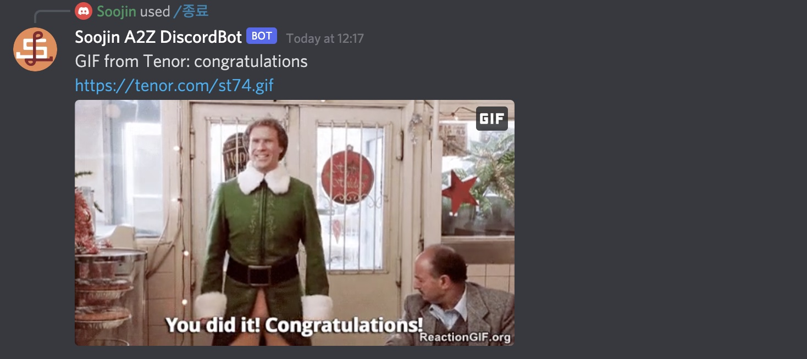

Author: Soojin Lee Date: 15, Oct, 2021
| Introducing Bots!
'Bot' - short for robot - is a software program that performs automated, repetitive, pre-defined tasks. The interaction can be one-sided, two-sided, multi-sided, and it's optional whether there are humans involved at all. Bots can be as simple as setting an alarm, but there are more complex bots like Siri and Cortana that cand hold conversation with people.
| Node.js
What is Node?
Node.js is a back-end JavaScript runtime environment that executes JavaScript code outside a web browser. The developers write command line tools for server-side scripting.
What can Node.js do?
According to
W3 Schools
- Node.js can generate dynamic page content
- Node.js can create, open, read, write, delete, and close files on the server
- Node.js can collect form data
- Node.js can add, delete, modify data in your database
npm: Node Package Manager
NPM - is the default pacakage manager for JavaScript's runtime Node.js.
package.json file will be generated when npm init is run to initialize a JavaScript/Node.js project.
| Commands for Computer
- pwd - print working directory (shows which directory you are working in right now)
- cd - change directory.
Tip: You can also drag file into the terminal itself, instead of typing.
- Ctl+c Ctl+c - get out of the directory
- ls - list the files in the directory
- npm init - set up a new or existing npm package. It create a package.json file.
- cd .. - move one directory up
- Cmd + k - clearning the screen
- ^ c - to get out of the directory
| Steps to Create Discord Bot
- Create node project and install discord.js module as well as dotenv.
- $ npm init
- $ npm install discord.js
- $ npm install dotenv
- Create a Discord Developer Application
=> Set name, description, and avatar of your preference.
- Select Bot from left navigation and "Add Bot" - set name and icon.
- Add bot to the discord server. I connected to A-Z server with the url:
https://discord.com/oauth2/authorize?client_id=YOUR_CLIENT_ID&scope=bot
=> To find a client ID, go to OAuth2 from left naviation. Once you have copied your client id,
Replace the word CLIENT_ID to your client ID you copied.
- Enable "Developer Mode" on your discord client, right-click the server icon, and "copy ID" for the server ID.
- Create a .env file with your CLIENTID, SERVERID, and BOTTOKEN:
For this particular project, I used tenor API.
So I added TENORKEY to the .env file.
- CLIENTID=1234
- SERVERID=1234
- TOKEN=1234
- TENORKEY=1234
- get Tenor API key
here
- Install additional node packages.
$ npm install @discordjs/builders @discordjs/rest discord-api-types
- Add slash commands permission. Go to your applicaiton page in the Discord developer portal, select "OAuth", check "application.commands", and open the URL that populates at the bottom.
- Create and Require deploy-commands.js
$ node deploy-commands.js
require('./deploy-commands');
| Project: Fun Korean Language Test With Discord Bot!
The project is uploaded to the github page
here
Video DEMO
Step-by-step
Korean testing bot is here to help you learn and test your Korean skills.
To start, type "hello" to discord chat box.
It will greet you and give you instructions. Please follow the instruction.
When you type in "/level1", you will receive a gif. Write down the name of the fruit in Korean in the chat box.
Strawberry in Korean is "ddal-gi". If you get it correct, it will send you a message to move on to level 2.

Type "/level2" as instructed.
Then it will give you an instruction:
type "/color" to receive a color of strawberry. Continue doing this until you get the right answer.
For the example above, it gave you 1. Blue 2. Blue 3. Green 4. Red in order.
When you receive the correct answer, "red", you will be get the next instruction:
Now, type"/finish" but in Korean, to finish the game.

If you type in the correct answer, which is "zong ryo" in korean, you will be contragulated with a gif file!
| Learn, Understand, and Practice
Since this is my first client-side coding project workinng with javaScript, API, and Terminal command lines, I spent a lot of time watching video tutorials and learning what node.js is, how to set up a computer, how to write commnad lines, how to write codes using node.js, and make it run.
Following video tutorials from this
website , I have spent the first week practicing and experimenting with making Twitter BOT that "tweets".
Here are some of the successes I screen captured while practicing making Twitter Bots that tweets!
(I have highlighted the bot tweets with orange rectangle box.)
| Idea & Inspiration
For WEEK6 in class, I learnt how to code a bot with discord.js. Using tenor API, and slash commands, I learnt how to make a bot where users can type slash command + key words to make bot send a GIF of the searched keywords.
Elaborating on this, for my midterm project, I decide to create a discord bot that helps people learn Korean and quizes Korean skills.
Mainly using message send function and slash command interaction, I wanted to make a step-by-step quiz solving game where the bot instructs and quesetion users what to do and challenge them to reply back wht the correct answer to the question.
Although the mechanism itself is simple, by adding creative narrative and interaction I planned to make it fun.
| Problems & Challenges
I have met many challenges and errors along the way from forgetting to deploy command files, and confusing with discord.js v12 and v13.
deploy command.js
To register and update the slash commands for the bot application, you need to create a
deploy-commands.js file in your project directory.
Apart from creating one, you need to run node deploy-commands.js. The instruction is documented
here. Therefore I didn't run it, I was continuously getting error message that says interaction failed (image below). Once I ran node deploy-commands.js, the error issue was solved.
Creating Client Instances & Guild Application Command
I forgot to create a new client instances for the message sending function. Along the process, I was confused with the code from discord.js v12 and v13 and I forgot to add Intents.FLAGS.GUILD_MESSAGES to client instances. This is to let discord know our bot wants to get messages. Because the bot was not getting messages, the message sending function was not being functioned.
It was confusing because I had this code for reply function (shown below), but the bot was not replying. It was even more confusing because the slash-command function was working fine, but much simpler replying function was not working.
This is because I didn't add a new client instance in this array.
After adding a new client instance, the reply function worked perfectly fine.